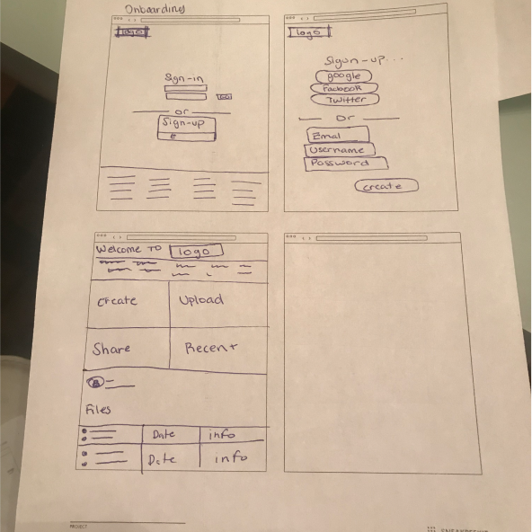
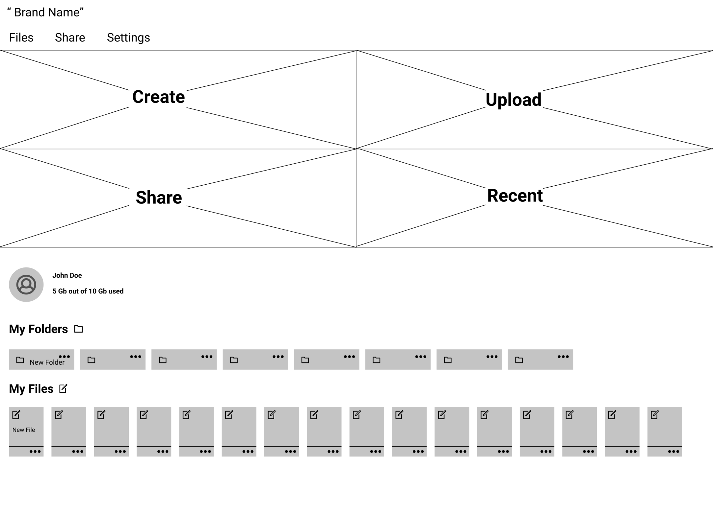
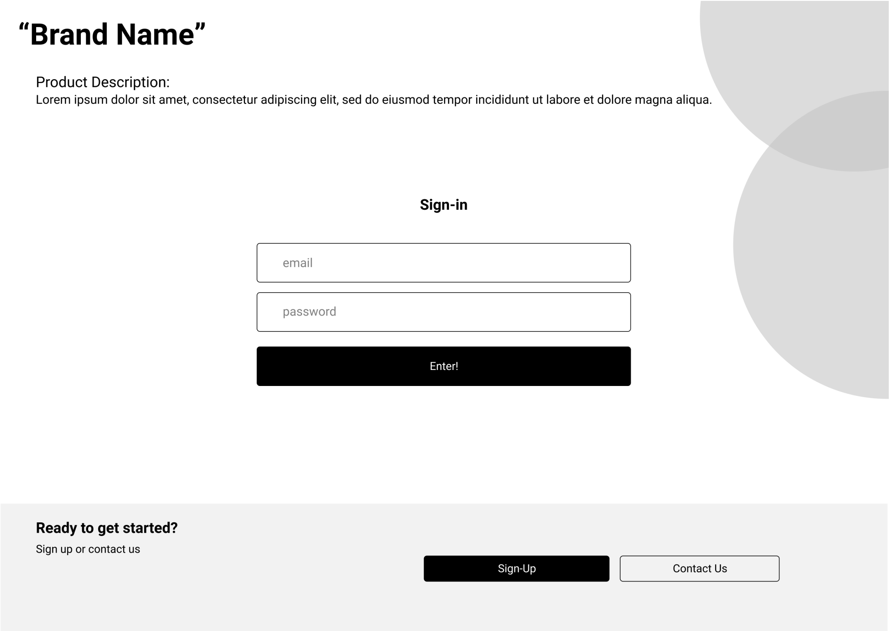
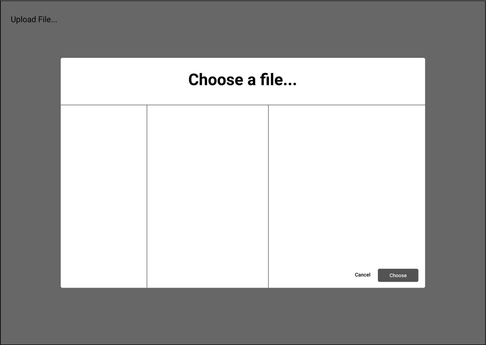
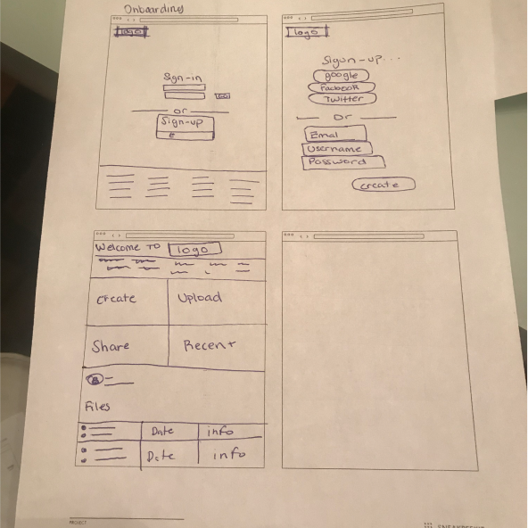
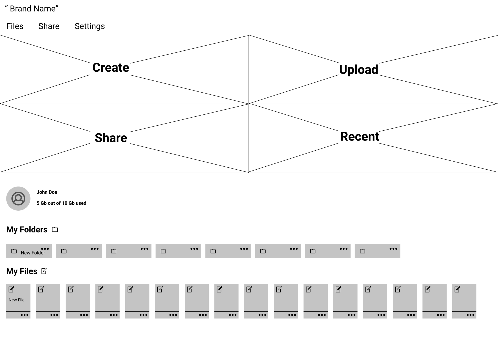
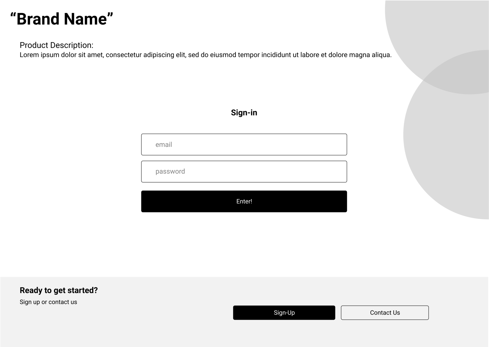
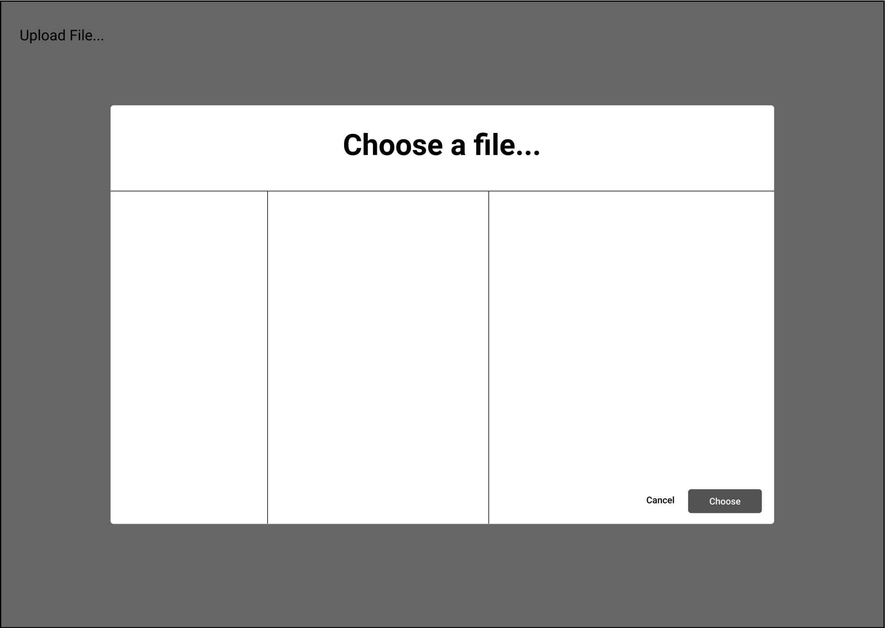

Information Archiecture
User Stories and Flows
With previous research in mind, one of the easiest ways to start the design of the smoothest paths for adding content, such as submitting follow-up forms, clicking to read about your location, practicing your presentations.
As a new user
I want to know the purpose of campaign
As a new user
I want to read about my city
As a new user
I want to find my kingdom hall location and times
As a new user
I want to see videos and pictures
As a new user
I want to learn presentations
As all users
I want to submit transportation forms
As all users
I want to sumbit follow-up forms
As all users
I want to submit my experiences
As all users
I want to replay presentatino vidoes
As all users
I want to read the script of the presentation videos
As all users
I want to see webiste in english and vietnamese
As all users
I want to campaign statistics
As all users
I want to read about updating information
User Testing
When undergoing functionality testing of the low-fi prototype, specifically testing the flow of Onboarding, Uploading, Sharing and Creating. Feedback collected from testers informed me to adjust the following…
-Add functionality to all buttons
-File and share toolbar not needed
-Buttons to big/ change to icons
-Move profile to top right
-Input icons instead of big buttons
After going through feedback collected from testing and a few iterations later, here is what it looks like. The goal was always keeping a simple homepage that was easily navigatable. Along with a modern and humanistic feel. Taking a look
at
the refined wireframe I added all suggestions from users, such as implementing icons instead of big buttons, with a drop-down button to utilize whitespace. Added a consistent look overall with icon choices, color choice, and layout.
User Testings
Preference Testing
To confirm and lock in my design decisions, I took it through a basic A/B test. Making sure the layout is suitable for users.
After testing, the result was users liked the original design best.


 Biography
Biography


 






